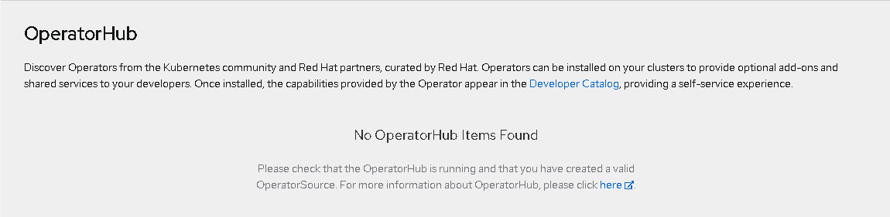
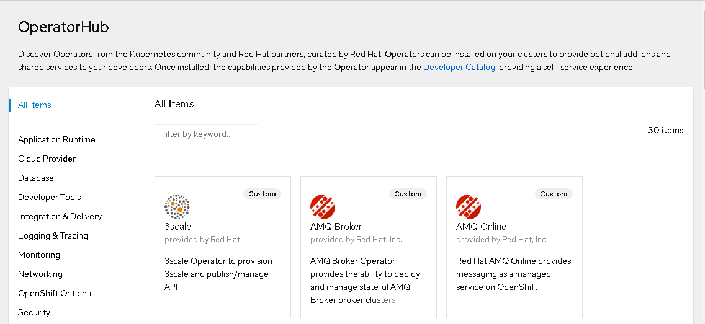

本文将使用前面保存私有镜像库的离线资源替换默认的 ImageStream 和 OperatorHub
替换 Sample Images
1
2
3
4
5
6
7
8
9
10
11
12
13
14
15
16
17
|
oc create configmap registry-config --from-file=/etc/pki/ca-trust/source/anchors/vopsdev-root-ca-g1.crt -n openshift-config
oc patch image.config.openshift.io cluster --patch '{"spec":{"additionalTrustedCA":{"name":"registry-config"}}}' --type=merge
oc patch configs.samples.operator.openshift.io cluster --patch '{"spec":{"samplesRegistry":"quay.svc.vopsdev.com"}}' --type=merge
oc patch configs.samples.operator.openshift.io cluster --patch '[{"op": "replace", "path": "/spec/managementState", "value":"Removed"}]' --type=json
oc get is -n openshift
oc patch configs.samples.operator.openshift.io cluster --patch '[{"op": "replace", "path": "/spec/managementState", "value":"Managed"}]' --type=json
oc get is -n openshift
oc get is apicast-gateway -n openshift -o yaml
|
在 openshift namespace 下的这几个 imagestream 不受 samples operator 管理, 而是来自离线安装介质
- cli
- cli-artifacts
- installer
- installer-artifacts
- must-gather
- tests
- jenkins
- jenkins-agent-maven
- jenkins-agent-nodejs
替换 OperatorHub
通过 oc get catalogsource -n openshift-marketplace 可以发现在 openshift-marketplace namespace 下有 redhat-operators, community-operators 和 certified-operators 三个 catalog source. 先禁用这些默认的源, 然后再添加本地离线资源
1
| oc patch OperatorHub cluster --type json -p '[{"op": "add", "path": "/spec/disableAllDefaultSources", "value": true}]'
|
此时在 web console 上查看 operatorHub 时可以发现已经没有内容了.

通过 oc get catalogsource -n openshift-marketplace 查看显示内容为空.
此处发现各个节点 kubelet 会依次重启. 如果遇到这个情况, 等各个节点都 Ready 再进行后面的操作
然后添加本地 catalog source. 这里需要用到前面 oc adm catalog mirror 产生的目录 redhat-operators-manifests
1
2
3
4
5
6
7
8
9
10
11
12
13
14
15
16
17
18
19
20
|
oc apply -f redhat-operators-manifests/
oc apply -f - <<EOF
apiVersion: operators.coreos.com/v1alpha1
kind: CatalogSource
metadata:
name: vopsdev-redhat-operators
namespace: openshift-marketplace
spec:
sourceType: grpc
image: quay.svc.vopsdev.com/devinfra/redhat-operators:v1
displayName: VOPSDEV RedHat Operator Catalog
publisher: grpc
EOF
oc get pods -n openshift-marketplace
oc get catalogsource -n openshift-marketplace
|
再登录 web console 就可以看到 OperatorHub 下的内容了
